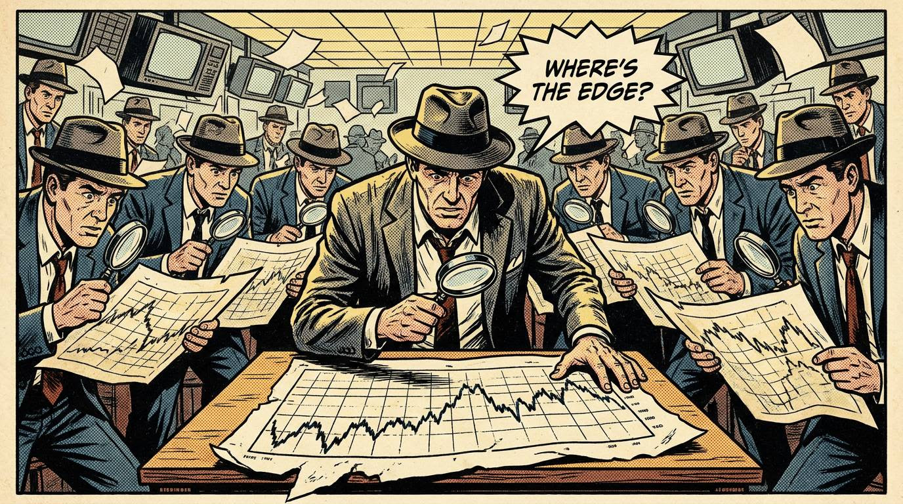

Bit of a pullback today, quite unusual to see a $500 Nasdaq range before 9.30 am!
Let's see whether this weakness persists throughout the US open…
Copper was having a nice run too. Decent-looking daily chart. But all the metals have taken a whack this morning. Feels like attention's gone back to “ye olde interest rate” story again.
Anyway. Stay locked in, play your game, and wait for the best setups.
Today looks like a busy one, so bookmark these links below for the weekend…
WHAT IS YOUR EDGE?

I've been thinking a lot about this one.
- What is edge?
- What does it actually look like?
- And how do you find your own?
Edge is different for everyone.
And sometimes it's not a simple thing to put into words.
But every successful trader has found one…
So here are three things worth your time this weekend if you're chewing on the same question.
🎥 Watch
Mike Bellafiore from SMB on trading edge. The video is over a decade old and still as relevant as anything you'll watch this year.
🎧 Listen
My latest podcast episode. Your Edge?
Most traders are doing the same thing. Same charts, same lines, same indicators. And if everyone's doing the same thing… where's the edge? I think I've found an answer...
📚 Read
Lessons from working at hedge funds, by Brett Steenbarger.
Brett asks a version of the same question I'm asking in the podcast. How can a trader achieve outstanding returns trading patterns that everyone else is already watching?